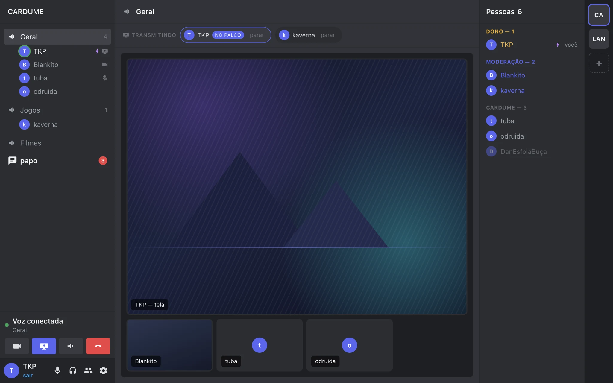

Salas de voz que estão sempre lá
Entra e sai com um clique. A barra lateral mostra quem está em cada sala, quem está falando, quem está com a câmera ligada e quem está transmitindo.
Um app de desktop para o seu grupo — com o som do que está na sua tela indo junto com a imagem.
Sem comunidade, sem gente que você não conhece, sem anúncio. Só as pessoas que você chamou.

A janela do app, com uma transmissão no palco e a faixa de quem está transmitindo logo acima.
Nada que você não vá usar — e as poucas coisas que faz, feitas até funcionarem.
Entra e sai com um clique. A barra lateral mostra quem está em cada sala, quem está falando, quem está com a câmera ligada e quem está transmitindo.
O áudio do que você está assistindo vai para a call em estéreo, sem o processamento de microfone que estoura filme — e sem devolver a voz de quem está na call de volta para dentro dela.
Até 1080p e 60 quadros. Numa cena pesada não cabem os dois: a 30 quadros a imagem fica nítida e os quadros é que cedem; a 60, o contrário.
Quem pode criar sala, mutar, expulsar ou banir é decisão do dono. E ninguém age sobre alguém de cargo igual ou superior ao seu.
Os sons vão numa faixa própria: tocar não depende de estar com o microfone ligado, e mutar alguém não muta os sons dele.
Foto e banner com enquadramento que você ajusta, GIF no chat, e vários servidores na mesma conta — cada um com o seu cargo e o seu nome.
O app não tem certificado pago, então o sistema avisa. Não há nada de errado com ele — é só o preço de um app feito para cinco pessoas.
Ao abrir, o endereço do servidor já vem preenchido. Falta só o seu apelido e a senha — peça ao dono do cantinho.